"Stockholm, the capital of Sweden, encompasses 14 islands and more than 50 bridges on an extensive Baltic Sea archipelago." Sweden is a big chunk of land but a small, small country with only approximately 9 million people. I grew up in the Stockholm area complaining and complaining about the weather; long winters with virtually no light and short summers with a forever-sun that kept you up all night. But one thing I never complained about was the scenery. Sweden is a beautiful country - both in people and nature. The neighborhoods are passionate about keeping their environment healthy and green, people are humble and polite, and restaurants always strive to nourish their customers healthily. The Swedish tradition during high school graduations is one of my particular favorites; besides cool sailor hats and beautiful whites for girls and tux for boys, students ride a giant truck where they drink/pour beer at one another and dance in puddles of sprite and alcohol. It sounds disgusting, but trust me, it's an amazing experience. What more? The truck travels all around the inner city of Stockholm!
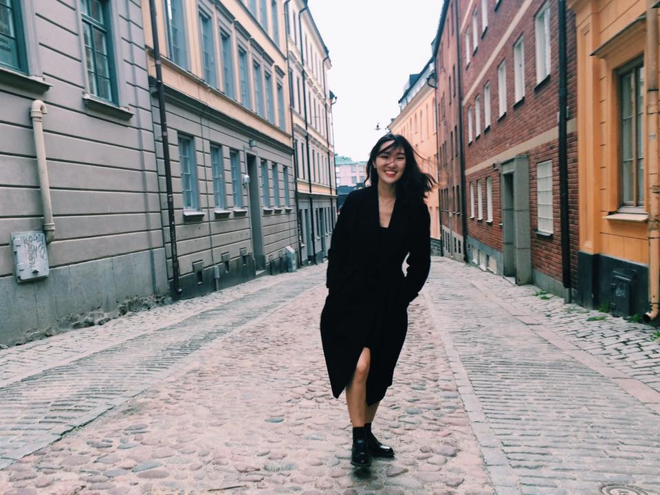 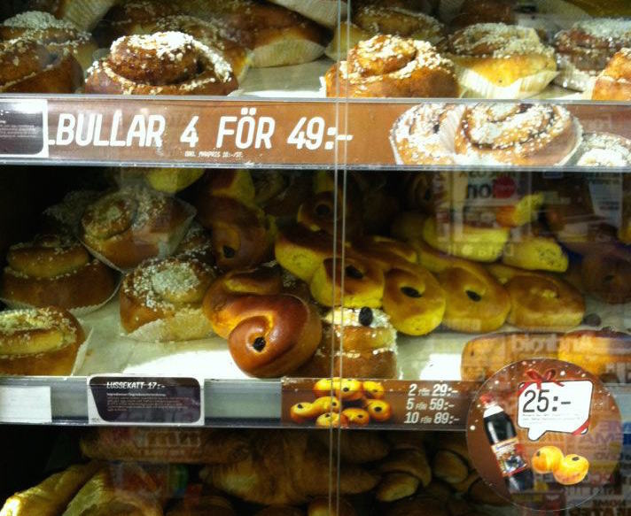 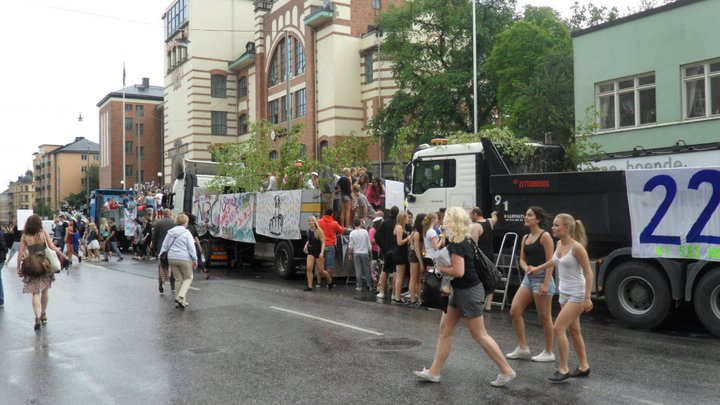 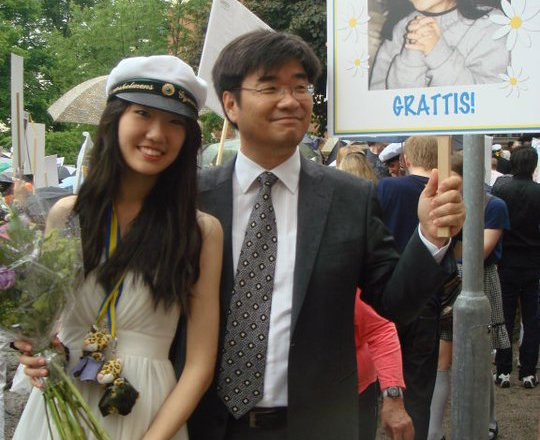 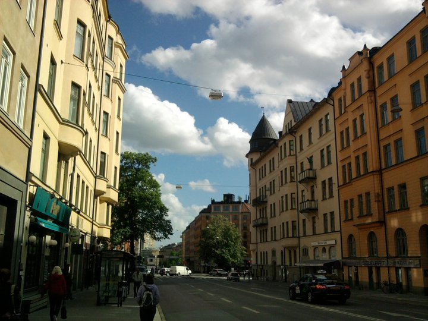 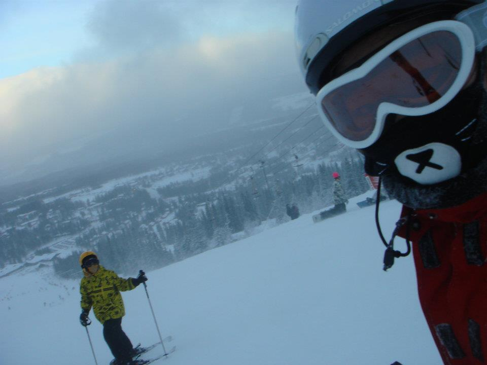
 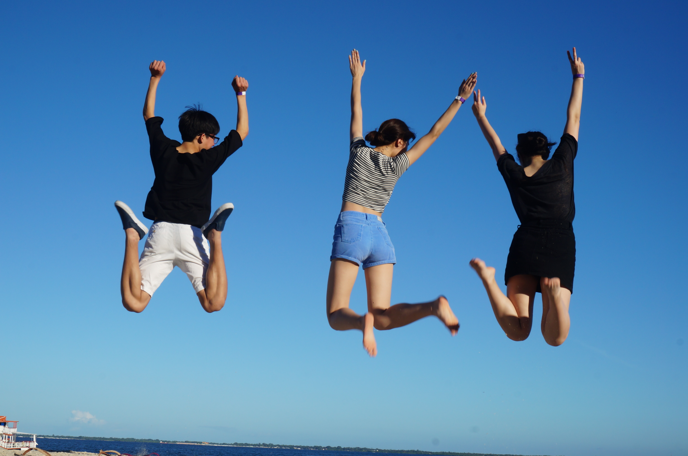
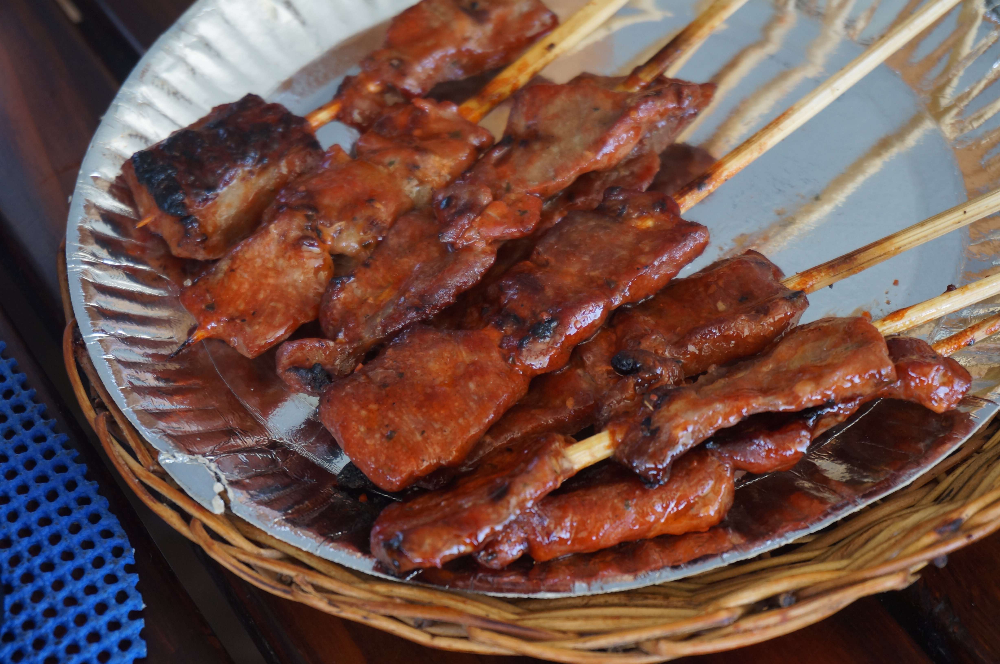
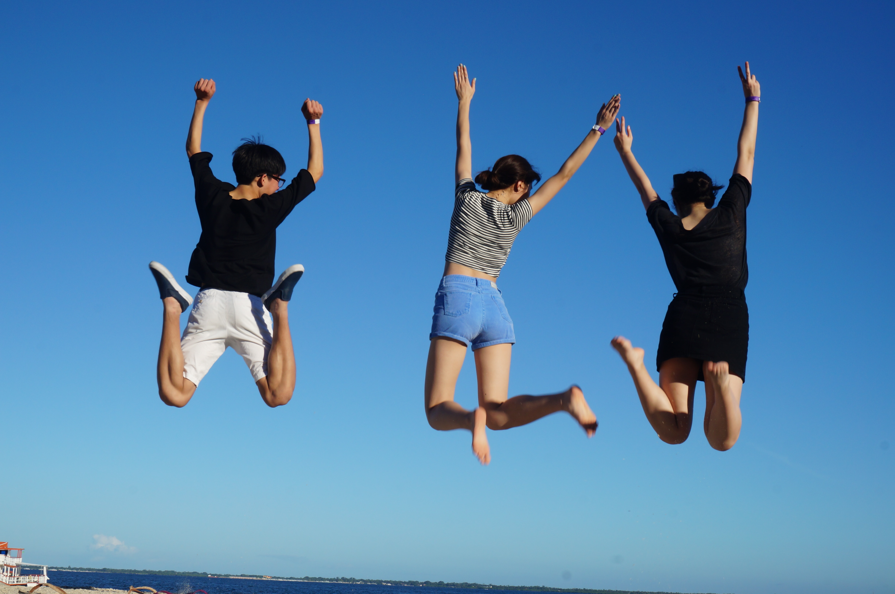
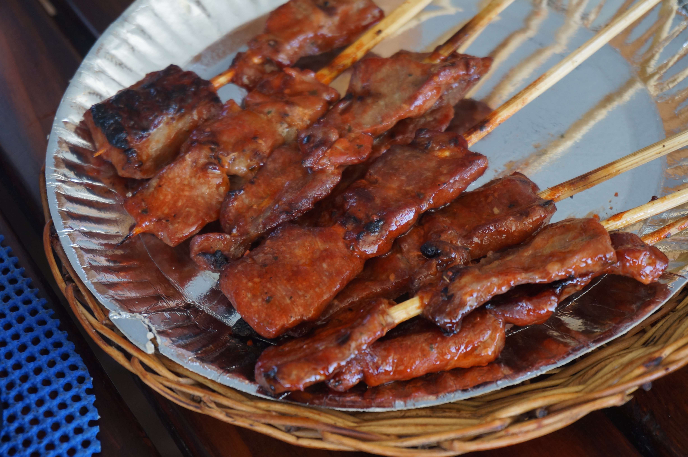


“Cebu (Cebuano: Sugbo) is a province in the Philippines, consisting of Cebu Island and 167 surrounding islands. It is located to the east of Negros, to the west of Leyte and Bohol islands. Cebu is a long narrow island stretching 225 kilometers from north to south, surrounded by 167 neighboring, smaller islands. Cebu has narrow coastlines, limestone plateaus and coastal plains. It also has rolling hills and rugged mountain ranges traversing the northern and southern lengths of the island.” During my one week travel to Cebu I was amazed by all of the wonders that the island had in store - the glittering waters, the beautiful flowers, the friendly people and the amazing food. As much as it was a wonderful place to visit, Cebu is a very big tourism island, with everything on the island almost specifically "manufactured" for the benefits of tourists. Without the help of local guides, Cebu could apparently be potentially dangerous for tourists; my crew and I were therefore limited to specific areas which were "considered safe." On the bus I was able to notice the big contrast between tourism sites and non-touristy areas. The hotels were glittering with gold but the neighborhood around it was in poverty.
"Okinawa Prefecture is made up of the Ryukyu Islands, which at their southern extremity begin at Nansei Island, and lie between Kyushu, the most southwesterly of Japan's four main islands, and Taiwan. Okinawa consists of 160 islands of various size scattered across a vast area of ocean. The temperature in winter is about the same as that of springtime in Tokyo and Osaka, making it warm and comfortable throughout the year." The food, the culture, and the quiet yet vibrant neighborhood were highlights of my trip to Okinawa. During my visit I roamed the old architectures at Okinawa and also went to the world's biggest aquarium. And at night, I visited the so-called "American village" which had striking, bright lights and an epic b-boy scene in the middle of the plaza. The weather was windy but the sun was beautiful. Despite it being late in December the air was breezy and there was a general feeling of warmth in the air which I enjoyed. Despite the fact that the Japanese culture has been a part of my life for a relatively short period of time, returning to Japan always makes me feel like I am returning to a home.
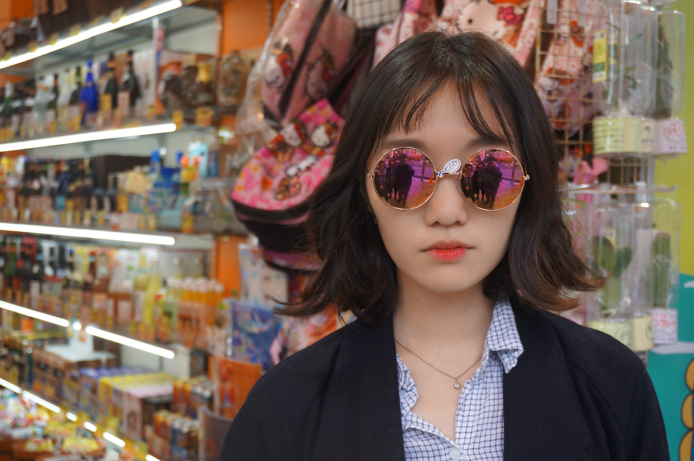 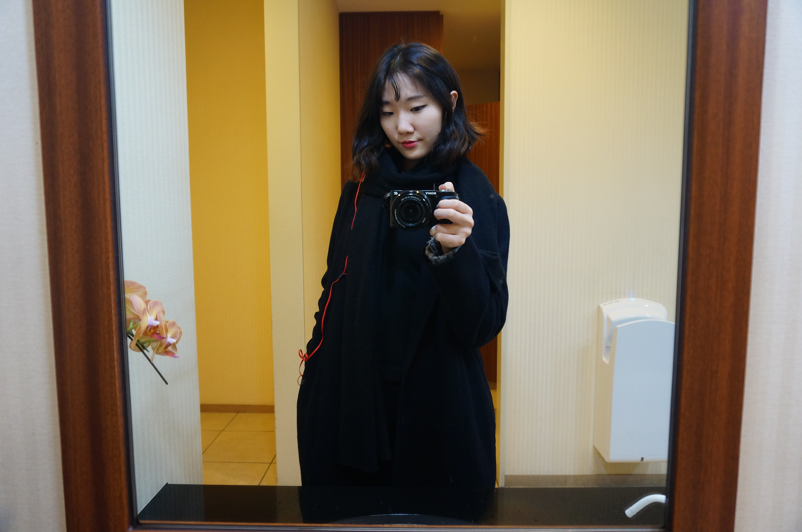


"Kyoto, located in the Kansai region of Japan, is the country's seventh largest city, with a population of 1.4 million people. Steeped in history, Kyoto is home to roughly one quarter of Japan's national treasures, countless shrines and temples, and seventeen sites recognized by UNESCO as World Heritage Sites." Kyoto was easily one of my favorite places to have traveled to. It is a beautiful place that holds a harmonious balance of old and new, traditional and modern. Amidst high technology and presence of science lives fairytales of gods and goddesses, and amidst skyscrapers and tall buildings breathes Shinto shrine sanctuaries and bamboo trees. A particular aspect of the culture in Japan, which was especially present in Kyoto, was just how many people were wearing the Japanese traditional outfits - kimonos and yukatas – publicly! I learned that in efforts to keep traditions alive, stores and businesses in Japan give discounts to people who come into their service with traditional outfits. There are also multiple traditional outfit rental stores around town, allowing foreigners to also get a taste of some of the privileges that comes with wearing the outfit. While staying at Kyoto I traveled to many different places in the neighboring area One of the most memorable visits was my visit to Nara Deer Park, which is a park full of wild deer. They come up to you for food and if you bow at them they bow back!